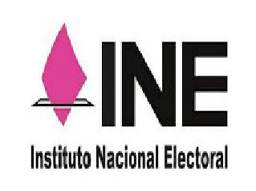
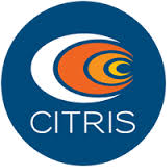

Equipo de Trabajo
Tecnológico de Monterrey

INE

Citris

México Participa es un proyecto que busca incrementar y fomentar el uso de mecanismos de participación ciudadana para la construcción de valores y prácticas democráticas. A través de un cuestionario corto que invita a la reflexión sobre temas específicos, los ciudadanos evalúan problemáticas y proponen temas relevantes para su atención por parte de los futuros gobernantes.
La plataforma CAFE (Collective Assessment and Feedback Engine) ofrece a los participantes información visual sobre su posición en distintos aspectos en relación con otros ciudadanos para fomentar el diálogo y evaluar problemas complejos. A través de modelos estadísticos, se identifican las opiniones y sugerencias de todos los participantes.
México Participa utiliza la plataforma CAFÉ desarrollada por el CITRIS para proyectos bilingües como California Report Card, el cual sirve para vincular a los ciudadanos con las autoridades de los 58 condados de ese estado, incluida la población que habla español. También para iniciativas de apoyo a la salud como el que desarrolla con familias de Uganda para la planificación familiar.